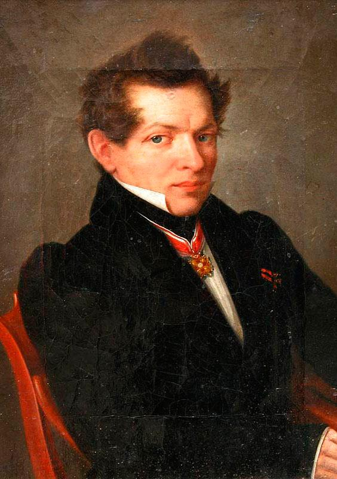

|
|---|
Николай Иванович Лобачевский(20 ноября (1 декабря) 1792, Нижний Новгород — 12 (24) февраля 1856, Казань)Российский математик, один из создателей неевклидовой геометрии, деятель университетского образования и народного просвещения.Лобачевский в течение 40 лет преподавал в Императорском Казанском университете, в том числе 19 лет руководил им в должности ректора; его активность и умелое руководство вывели университет в число передовых российских учебных заведений. По выражению Н. П. Загоскина, Лобачевский был «великим строителем» Казанского университета. Сохранились студенческие записи лекций Лобачевского (от 1817 года), где им делалась попытка доказать пятый постулат Евклида, но в рукописи учебника «Геометрия» (1823) он уже отказался от этой попытки. В «Обозрениях преподавания чистой математики» за 1822/23 и 1824/25 годы Лобачевский указал на «до сих пор непобедимую» трудность проблемы параллелизма и на необходимость принимать в геометрии в качестве исходных понятий, непосредственно приобретаемые из природы. 7 (19) февраля 1826 года Лобачевский представил для напечатания в «Записках физико-математического отделения» сочинение: «Сжатое изложение начал геометрии со строгим доказательством теоремы о параллельных» (на французском языке). Но издание не осуществилось. Рукопись и отзывы не сохранились, однако само сочинение было включено Лобачевским в его труд «О началах геометрии» (1829—1830), напечатанный в журнале «Казанский вестник». Это сочинение стало первой в мировой литературе серьёзной публикацией по неевклидовой геометрии, или геометрии Лобачевского. Лобачевский считает аксиому параллельности Евклида произвольным ограничением. С его точки зрения, это требование слишком жёсткое, ограничивающее возможности теории, описывающей свойства пространства. В качестве альтернативы предлагает другую аксиому: на плоскости через точку, не лежащую на данной прямой, проходит более чем одна прямая, не пересекающая данную. Разработанная Лобачевским новая геометрия не включает в себя евклидову геометрию, однако евклидова геометрия может быть из неё получена предельным переходом (при стремлении кривизны пространства к нулю). В самой геометрии Лобачевского кривизна отрицательна. Уже в первой публикации Лобачевский детально разработал тригонометрию неевклидова пространства, дифференциальную геометрию (включая вычисление длин, площадей и объёмов) и смежные аналитические вопросы. Осознание того, что у евклидовой геометрии имеется полноценная альтернатива, произвело огромное впечатление на научный мир и придало импульс другим новаторским идеям в математике и физике. В частности, геометрия Лобачевского оказала решающее влияние на появление римановой геометрии, «Эрлангенской программы» Феликса Клейна и общей теории аксиоматических систем. |
Меню |
Изображение |
©2021 |
|---|